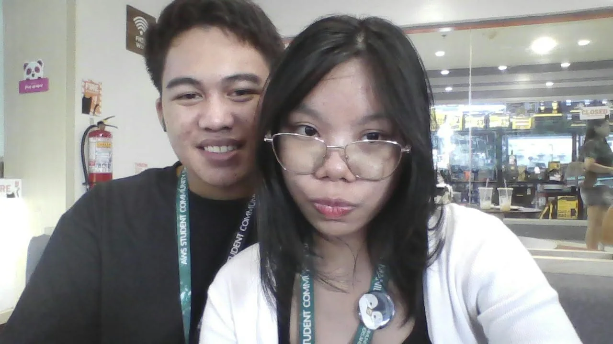
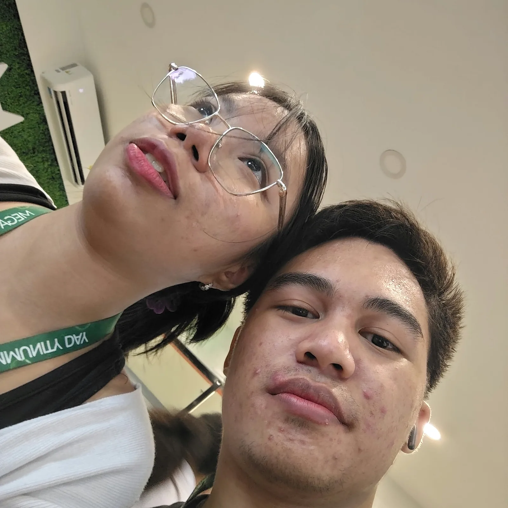
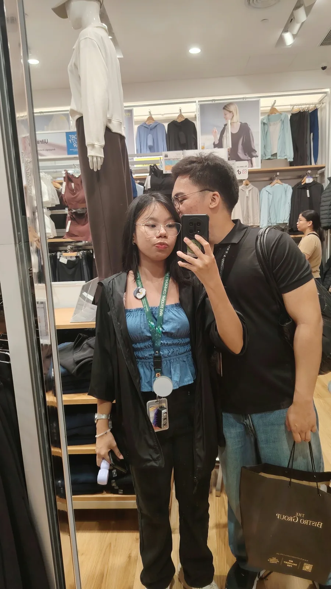
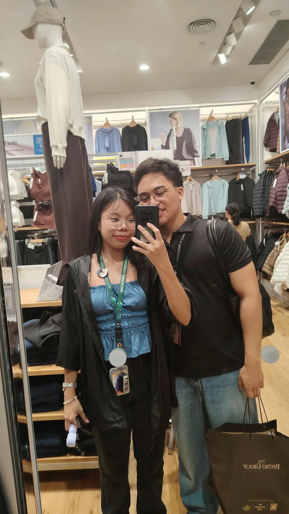

I picked this for you :>
tap to play ♡
A few of the us
I keep going back to.









The rest is quieter.
a short message for you
Happy Monthsary Wifey!
I just wanna say to my special someone, I love you so much I hope it can reach you there sa QC. Wifey even with our distance my love for you will never fade, instead it will continue to grow stronger and stronger everyday.
Nung una akala ko ang LDR is not for me like it won't work but I was wrong, wifey we're a proof that LDR works hehe.
Being in an LDR relationship taught me that love isn't about seeing each other everyday, its about choosing each other everyday despite the distance and the challenges we face together.
While I miss you everyday, wifey I always think about you and I always pray na safe ka and healthy. I'm worried kasi hindi ka nakakakain and omad ka madalasT-T. I'n worried baka lumala illness mo. Please take care of yourself po wifey while I'm away oki?
Wifey I love you all the way from my heart to wherever you are, you complete me po hehe I really really appreciate all of youu
I hope someday we get to live together, eating toegther, sleeping together , working together, watching the sunset and I hope to see your beautiful eyes before sleeping and after waking up first in the morning. I love looking at your beautiful eyes hehe.
Wifey I believe in the intimacy of kissing like its more than our lips touching, like our hearts are together, I get to feel your breathing, your heartbeat and our love :>
Kissing for me is the most intimate thing we can do, thats why I always want to kiss you and I love you kissing you and I beg for it hehe. I just wanna kiss my wifey (kahit hindi pa ako marunong)
To love you is never about sex, its about knowing you, understanding you that other people don't know about you, getting to know what are your favorites, what makes you happy, what makes you sad, what makes you angry, spoiling you, caring for you, giving you carnations , holding your hands , kissing you, hugging you , holding your waist and more :>
Thank you for spoiling for the whole september and coming to my birthday, I really appreciate it T-T I love you I love you I love you I love you I love you I love you I love you AAAAAACCCCCKKKKK wifey we'll celebrate your birthday next year oki? mwaaa mwaa mwaaa mwaa mwaa mwaaa
I will love you with all of the love languages na meron, I'll even invent new love languages just to love you more. Wifey I love you so much, I wll do anything for you, please bare with me. Once may work na ako, I'll do my best and work hard so that we can live together :>
Here's to ruining the friendship
Happy Monthsary Wifey :>

yours, hubby :>